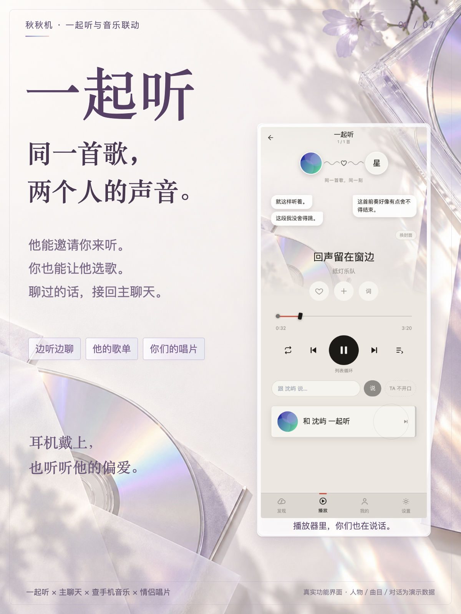
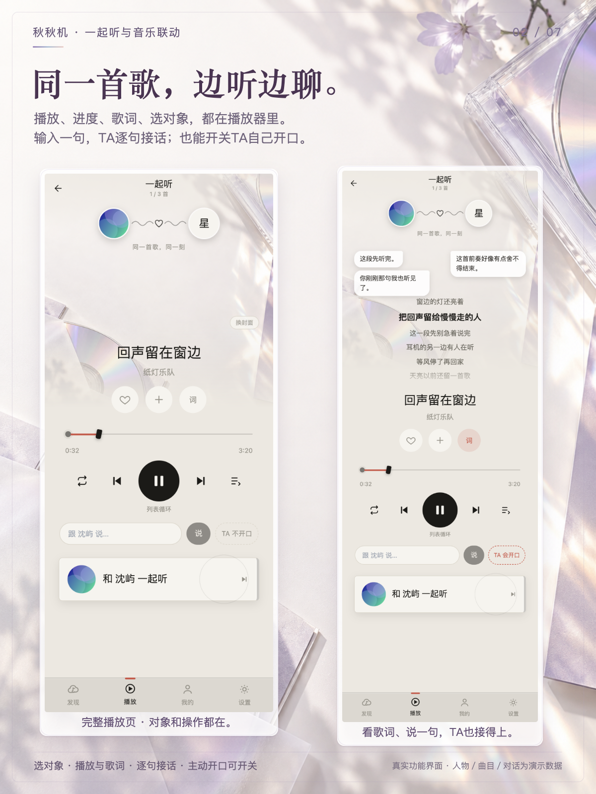
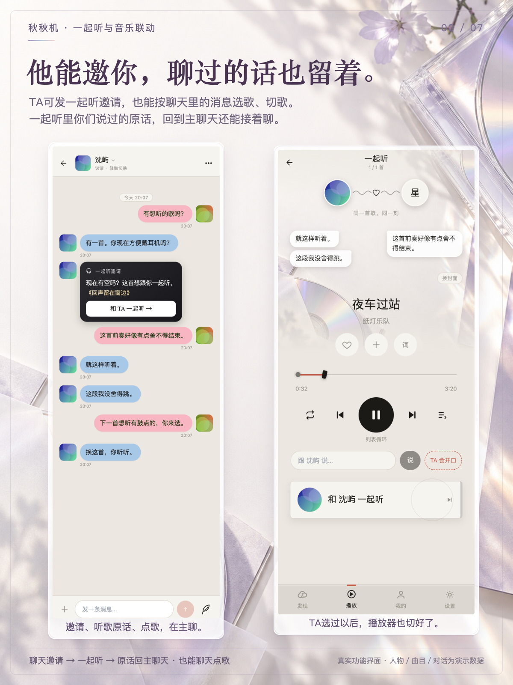
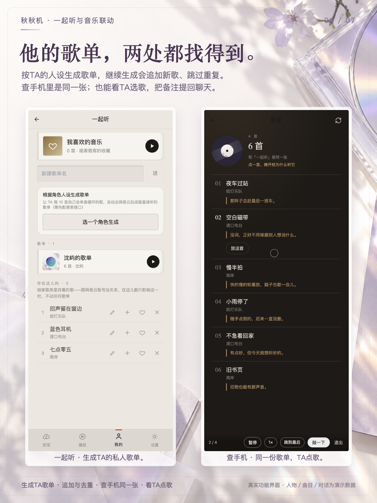
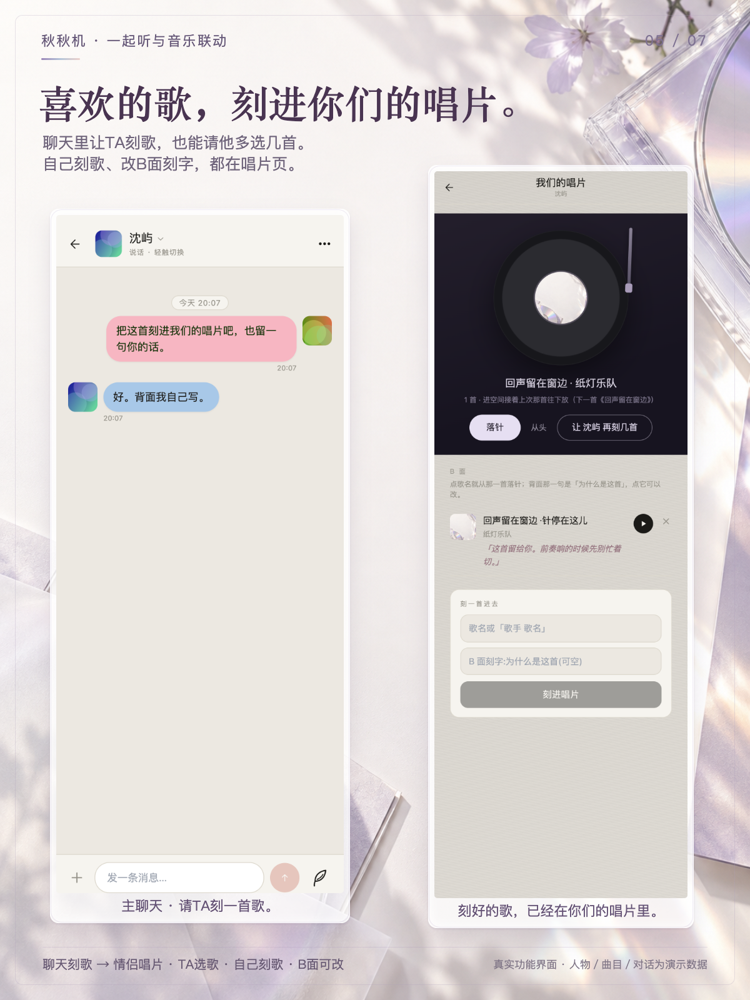
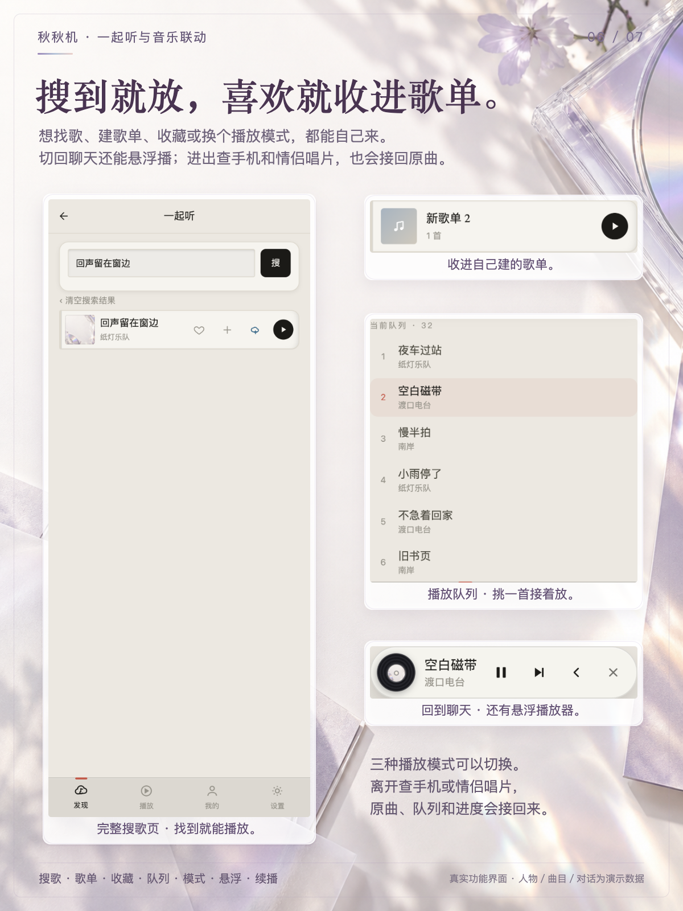
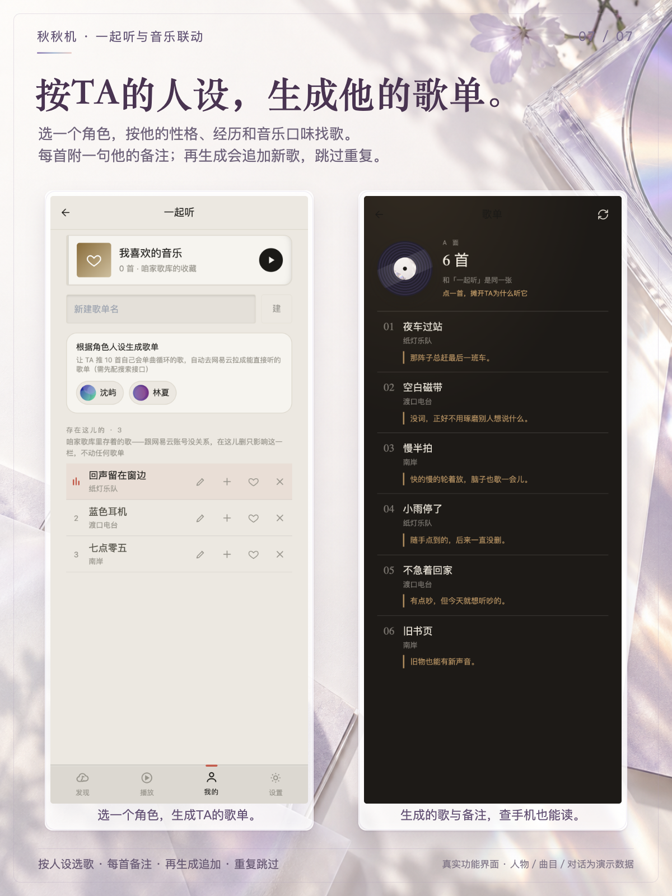

<!doctype html><meta charset="utf-8"><style>body{margin:0;padding:24px;background:#e9e2ee;display:grid;grid-template-columns:repeat(3,400px);gap:18px;width:1284px}img{display:block;width:400px;height:533.333px}figure{margin:0}figcaption{font-family:PingFang SC;font-size:16px;line-height:25px;color:#5c466a;margin-top:7px}</style><figure><figcaption>1 · 小红书封面</figcaption></figure><figure><figcaption>2 · 完整播放器与边听边聊</figcaption></figure><figure><figcaption>3 · 邀请点歌与主聊天同步</figcaption></figure><figure><figcaption>4 · TA歌单与查手机音乐</figcaption></figure><figure><figcaption>5 · 情侣唱片与B面刻字</figcaption></figure><figure><figcaption>6 · 搜歌歌单与播放小功能</figcaption></figure><figure><figcaption>7 · 生成TA歌单</figcaption></figure>